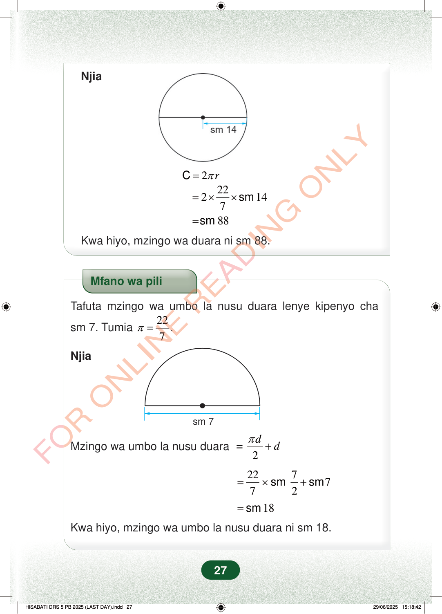

Njia2rπ=C222147=××sm88=smKwa hiyo, mzingo wa duara ni sm 88.Mfano wa piliTafuta mzingo wa umbo la nusu duara lenye kipenyo chasm 7. Tumia227π=.Njiasm 7ddπ+Mzingo wa umbo la nusu duara= 2227772=×+smsm18=smKwa hiyo, mzingo wa umbo la nusu duara ni sm 18.27Njia
2 r π = C
22 2 14 7 = × × sm
88 = sm
Kwa hiyo, mzingo wa duara ni sm 88.
Mfano wa pili
Tafuta mzingo wa umbo la nusu duara lenye kipenyo cha
sm 7. Tumia 22 7 π = .
Njia
sm 7
d d π +
Mzingo wa umbo la nusu duara = 2
22 7 7 7 2 = × + sm sm
18 = sm
Kwa hiyo, mzingo wa umbo la nusu duara ni sm 18.
27
Mfano wa kwanza unauliza kutafuta mzingo wa duara lenye nusu kipenyo cha sentimeta 14, kwa kutumia pai sawa na ishirini na mbili juu ya saba.Mfano wa kwanzaTafuta mzingo wa duara lenye nusu kipenyo cha sm 14.Tumia <math><mrow><mi>π</mi><mo>=</mo><mfrac><mn>22</mn><mn>7</mn></mfrac></mrow></math>NjiaDuara lenye mstari wa kipenyo kupitia katikati, na kutoka katikati hadi pembeni kumeandikwa sm 14.<math><mrow><mi>C</mi><mo>=</mo><mn>2</mn><mi>π</mi><mi>r</mi></mrow></math><math><mrow><mo>=</mo><mn>2</mn><mo>×</mo><mfrac><mn>22</mn><mn>7</mn></mfrac><mo>×</mo><mtext>sm </mtext><mn>14</mn></mrow></math><math><mrow><mo>=</mo><mtext>sm </mtext><mn>88</mn></mrow></math>Kwa hiyo, mzingo wa duara ni sm 88.Mfano wa pili unaonyesha nusu duara lenye kipenyo cha sm 7. Mzingo wake unapatikana kwa kuchukua nusu ya mzingo wa duara na kuongeza kipenyo, hivyo jibu ni sm 18.Mfano wa piliTafuta mzingo wa umbo la nusu duara lenye kipenyo cha sm 7.Tumia <math><mrow><mi>π</mi><mo>=</mo><mfrac><mn>22</mn><mn>7</mn></mfrac></mrow></math>.Njia<math><mrow><mtext>Mzingo wa umbo la nusu duara</mtext><mo>=</mo><mfrac><mrow><mi>π</mi><mi>d</mi></mrow><mn>2</mn></mfrac><mo>+</mo><mi>d</mi></mrow></math><math><mrow><mo>=</mo><mfrac><mn>22</mn><mn>7</mn></mfrac><mo>×</mo><mtext>sm </mtext><mfrac><mn>7</mn><mn>2</mn></mfrac><mo>+</mo><mtext>sm </mtext><mn>7</mn></mrow></math><math><mrow><mo>=</mo><mtext>sm </mtext><mn>18</mn></mrow></math>Kwa hiyo, mzingo wa umbo la nusu duara ni sm 18.